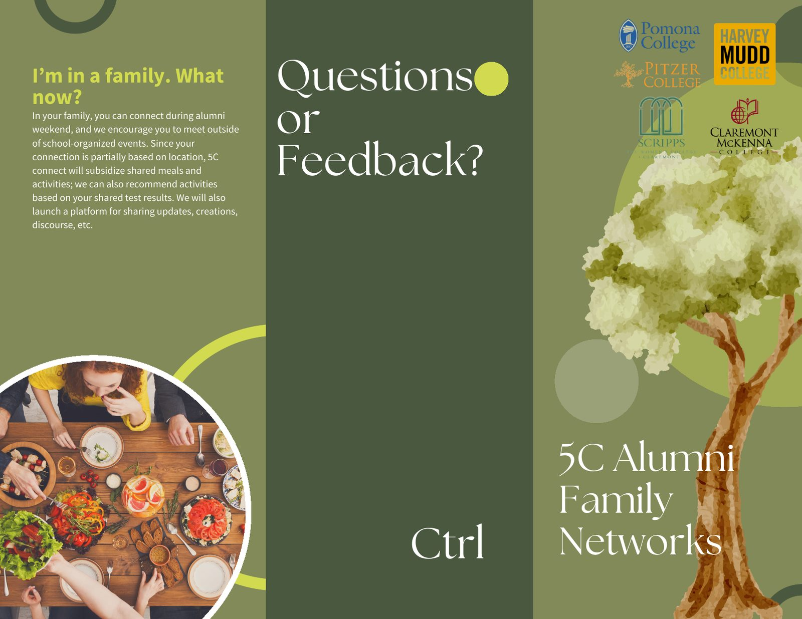
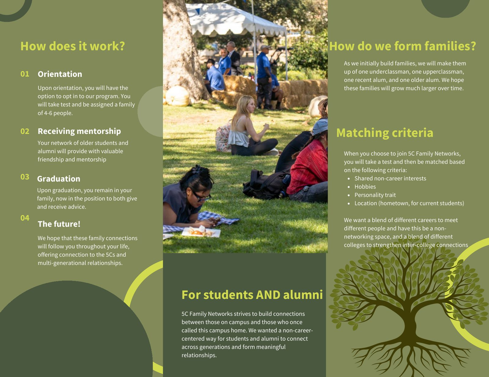
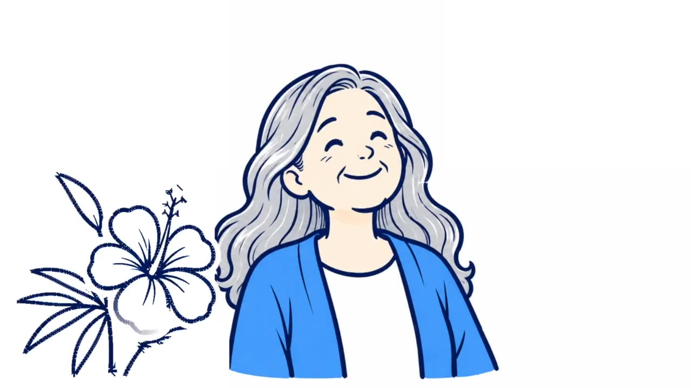

Leela ShankarAlumni Connections, a Human-Centered Design Case Study
Download PDFOur empathy map on the Hive foam board. Tap to enlarge.
What seven alumni, 100 ideas, and two prototypes taught our team about designing for students and alumni at The Claremont Colleges.
The class. A project-based course in human-centered design open to all five Claremont Colleges, taught at the Hive by Fred Leichter (Engineering, Harvey Mudd) and Dr. Shannon Randolph (Environmental Analysis, Pomona). Each design project runs the same five steps: empathy interviews and observation, reframing, ideation, prototyping, and iteration.
Where this sits. DP1 was individual (Sept 11 to 24). DP2, this project, was a team of four (Sept 25 to Oct 22). DP3 is a team project running Oct 23 to December 2026.
The brief. "Design for meaningful alumni connections at The Claremont Colleges." The Claremont Colleges, called the 5Cs on campus, are five undergraduate colleges on one shared campus: Pomona, Pitzer, Scripps, Claremont McKenna, and Harvey Mudd. Partners: 5C Alumni Boards, Pomona College Alumni & Family Engagement Office, and the Associated Students of Pomona College.
Status. This page shows DP2 as completed and graded. DP3 is in progress through December 2026, for The Salvation Army: how service animals could help people dealing with addiction and homelessness. This page will be updated when it is complete.
Team of 4. Where this page says "I," it is my work. Where it says "we," it is the team's.
Alumni engagement surveys from 2022 to 2024 put meaningful alumni engagement at about 19 to 20 percent (cited via US News in the project brief). Students feel distant from alumni, and existing platforms feel transactional.
I took part in every stage with my team. I brainstormed about 30 of our 100 ideas, conducted 2 of 7 interviews, helped create the 5C Family Network prototype, gathered feedback on it from 4 people, helped build the revised flyer, and edited our video.
Two prototypes: the 5C Alumni Family Network (a program, tested with a flyer) and a Color War-style tournament for students and alumni.
Putting students and alumni in the same space does not create connection by itself. The connection has to be set up with structure, clear roles, and a way for everyone to contribute.
The Claremont Colleges (the 5Cs) are five undergraduate colleges on a shared campus in Claremont, California. The brief described alumni who are excited to help but do not know where to start, and students who feel distant from alumni because existing connection platforms do not feel human. Asking for career advice can feel transactional, especially when students worry about asking for help at all.
Two scoping decisions came first. We chose to connect students with alumni, not alumni with other alumni. And we chose to avoid the career-focused style that platforms like Sagehen Connect often offer.
As a team we interviewed 7 alumni, from the Class of 1983 to the Class of 2026. Some live in Claremont. Others live in Bali and Berlin. I conducted 2 of the interviews. We also had 2 other conversations about how Pomona currently handles student and alumni relations. Interviewees are identified by college and class year only.
Showing 7 of 7.
"My perspective may be dated."Pomona '83
"I would totally join."Flyer tester, on the Family Network
She wants to "pay it forward."Pomona '24, on her tennis team network
Fun, informal, and "very college."Color War participants
We built an empathy map to separate what interviewees said and did from what they thought and felt. This showed us which parts of our notes were explicit and which were our own interpretation. The transcription below is from the board; sticky colors on the board are interviewees. Pick a persona in the next section to see which notes it grew from.
We wrote four points of view from our interviews in the d.school format: a user, what they need, and why. We focused on the first two for ideation. Select one to see the empathy-map notes it grew from.
Click a persona to light up its notes on the empathy map above.
Built after the class from the interview notes. Not a class deliverable.
The opportunity is the gap between stages two and four: nothing in the current system makes the first reconnection happen on purpose.
We started with a "benefit baiting" exercise: list the benefits a product connecting students and alumni could offer, then think of existing products that share those benefits. Connection led us to families, video calls, and shared interests. From there we built a list of 100 ideas and sorted every one into a category. Each category answers one of our seven How Might We questions.
Each tile is one idea. Hover or tap for the text. The ringed tile is idea 17, which became the Family Network. Ideas 16, 19, 56, and 98 are the game and competition ideas the Color War drew on.
We did not score the list. We ran mini role-play tests of our strongest ideas with other groups in the class, acting out how each one would work, and picked the two that we liked the most and that our classmates responded to best in that activity. We decided which ideas were the strongest and prototyped those.
What the two picks had in common, looking back: the Family Network (idea 17) served all four personas, especially the first two, so it was the idea with the widest reach. The Color War tournament came from our biggest group of ideas, the fun-together games, so it was the idea that tested our most common instinct. Both could be put in front of real people within a week, one with a flyer and one with a staged event, and neither leads with careers.
A program where students and alumni are placed in a "family" of 4 to 6 people and stay in it after graduation. We made a trifold flyer to explain it and used the flyer to collect feedback. It is a prototype for testing, not a final product.


Low-resolution prototype for concept testing, built as a trifold in Canva. I helped create the first version and the revised version.
An event where seniors, 10-year alumni, and current MBA students play classic college games on mixed teams. We staged it with about 10 participants to see what mixing people in the same space actually does.
Whether shared, informal fun is enough on its own to make students and alumni connect. This was the largest category in our 100 ideas, so it was the hypothesis most worth checking.
I gathered feedback from 4 of the 10, then used it to help build the revised flyer. Open a row to see the change.
We did not run a survey. With more time, the first thing I would add is a five-question survey to the ten flyer testers to size the opt-in preference rather than infer it from conversations.
We told our user's story in a 2-minute video built from a "storyspine," focusing on the older alum persona with elements of the recent grad persona, to show how the Family Network could connect two people like them. I edited the video. It is drawn, not filmed, so no interviewee appears in it.

A proposal, not a result. Nothing here has been measured.
The system has three kinds of users: the alumni office manager who runs it, alumni, and current students. These are the measures I would set up for the office in the first year.
A big lesson for me came in the iteration step. When we first designed the 5C Family Network, we planned to sign all first-years up automatically at orientation, and they could opt out later if they did not like it. We thought this would build a strong foundation, since most of each graduating class would already be in the network. When we tested the idea, most people thought it should be opt-in. I realized we had to prioritize the user and not put our goals for the product above them. We want a large network of 5C "families," but we cannot force people to be part of it.
This connects to what we talked about in class: it is hard to keep your own wishes and needs out of the design process, and it was especially hard here because we were designing for ourselves in a way. Finding a balance between what is best for your user and your own idea of what the product should be is important.
The rule I take from it is to balance the needs of the users with those of the alumni office. My hypothesis: opting everyone in would raise the office's count of family networks created, but most of those networks would have low or zero engagement. Alumni and students who are motivated enough to choose to join will form fewer networks, and better ones.
Category in parentheses. Idea 17 became the Family Network.